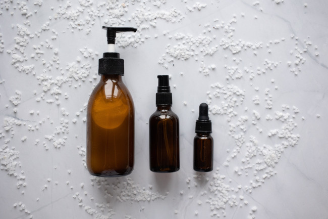

A aromaterapia é uma técnica, de origem francesa, que utiliza de óleos essenciais para equilibrar o corpo e mente. Ao sentirmos o aroma desses óleos, nosso corpo responde de forma positiva, chegando a promover a melhora de algumas doenças. O nosso sistema límbico, área do sistema nervoso responsável por regular as emoções, ao perceber que sentimos algum aroma, dispara neuroquímicos que podem ter ação sedativa, estimulante ou relaxante. Isso faz com que todo o nosso corpo reaja, ficando mais relaxado, mais ativo, mais concentrado ou menos tenso.
Por conta disso, a aromaterapia consegue atuar fazendo com que óleos essenciais específicos nos auxiliem quando necessitamos. Mas, para isso, é preciso saber qual a função de cada óleo, além de saber como o utilizar.
Os óleos essenciais são extraídos de plantas e ervas, como laranjeira, lavanda, alecrim, eucalipto, entre outras. Eles são bem concentrados, por isso precisam ser diluídos em bases neutras, como óleos vegetais, para quando se quer utilizá-los em massagens, por exemplo, ou utilizar poucas gotas para quando se quer inalá-los.
Uma das formas mais utilizadas, ultimamente, é utilizar difusores de ambiente. Eles transformam os óleos em vapor fazendo com que a essência se espalhe pelo ambiente.
Outras formas de utilizar os óleos são por meio de colares difusores, banho de assento, banhos convencionais, compressas, inalação e produtos naturais que levam óleos em sua composição.
Cada óleo essencial age de forma única em nosso organismo. Isso se dá porque cada planta tem propriedades específicas. Dessa forma, confira a seguir os benefícios de alguns óleos essenciais para a saúde:
Alecrim: auxilia na concentração e a manter o foco. Sendo muito bom para pessoas que estão estudando.
Camomila: auxilia no tratamento da apatia, ansiedade e irritação. Além disso, ajuda a aliviar as dores musculares.
Bergamota: é revigorante e ajuda nos tratamentos de insônia, depressão e ansiedade.
Gerânio: atua no equilíbrio e produção de hormônios femininos, no desconforto da menopausa e na redução de alteração do humor na TP.
A aromaterapia é um dos vários tratamentos que podem ser feitos de forma paralela com o uso de medicamentos. Se você quer começar a utilizá-la junto com o tratamento que seu médico recomendou, avise-o sobre isso. Bem como, avise seu aromaterapeuta sobre o tratamento convencional que está fazendo. Assim, os dois podem agir em conjunto para a melhora da sua saúde ou apenas na promoção do bem estar.